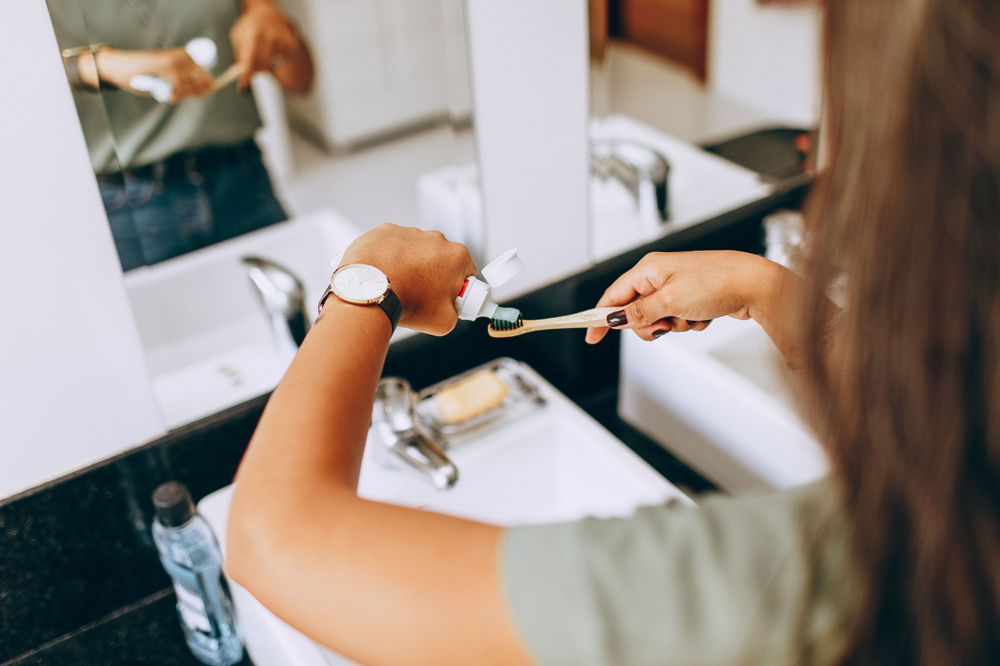

Everyday Action Guide
You don`t need to change everything at once. Start with one habit, keep going, then add another.

Five simple actions for beginners
- Carry a reusable bottle. Refill instead of buying.
- Bring your own bag. Keep one where you will see it.
- Switch things off. Lights, chargers and standby devices.
- Plan one meal ahead. Use what you already have.
- Choose one greener trip. Walk, cycle or take the bus.
An eco-routine for your day
Morning
A simple routine to follow:
- Switch off lights as you leave.
- Pack your bottle and bag.
- Take a short shower.
Afternoon
A simple routine to follow:
- Choose a reusable cup, bottle or container.
- Walk part of your journey.
- Sort waste at work, school or college.
Evening
A simple routine to follow:
- Cook with what you have.
- Unplug devices you are done with.
- Sort recycling and compost scraps.
Seven-day sustainability challenge
One small task per day for a week.
Day 1
Carry a reusable bottle all day.
Day 2
Switch off or unplug three things.
Day 3
Eat one meal with no food waste.
Day 4
Walk or cycle one short journey.
Day 5
Say no to unneeded packaging.
Day 6
Repair or reuse something old.
Day 7
Share one idea with a friend or family member.
Building long-term habits
Habits stick when they are small, specific and linked to something you already do. For example, fill your bottle while the kettle boils, or check the lights each time you pick up your keys.
- Start with one habit, not ten.
- Attach it to an existing routine.
- Make it easy: put bags and bottles where you will see them.
- Missed a day? Simply start again.
Your choices matter
Small changes, repeated every day, builds a greener future.
Back to the home page